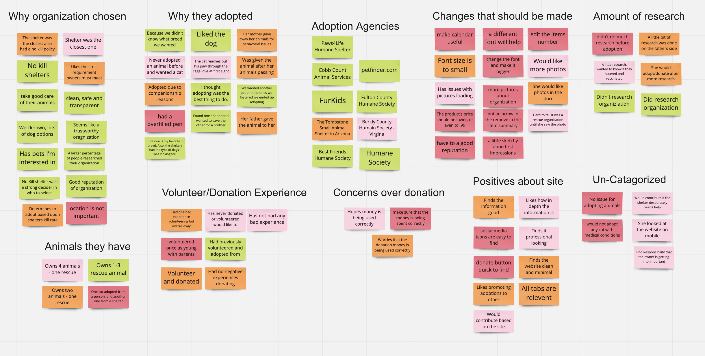
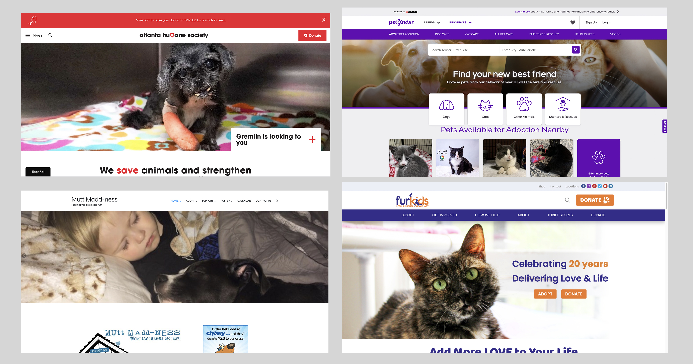

How do we start the UX research?
To help us understand problems between rescue animal organizations and users, and digging more problems about the site, we conducted 3 user interviews with animal adoption experiences, 3 usability testings and 8 people’s Google surveys.
The questions would focus on their own adoption experience, and feedback about RMG website.
-
Do you own any adopted pets?
-
What would attract you to donating to an animal rescue?
-
Did you do any research concerning the organization from where your animal was adopted?
-
What is your first impression of the RMG site?
-
After 1 minute, what is your second impression?
Research Conclusion
We organized our interview and survey results into an Affinity Diagram. Surprisingly, we discovered that there is a range of people who have at least one animal adoption experience in the past. They care about the animal rescue organization’s reputation, trustworthy, and no killer shelter.

The positive feedback about RMG’s site has good depth information, professional looking, and the adoption process is easy to understand.
On the other hand, the calendar feature is questionable, the font size is too small, more pictures about RMG, and shop’s item pictures are not loaded.
We believe that updating Rescue me Georgia will allow our users to feel secure that the organization is caring for their animals. We might be able to help if we redesign the navigation header so that users can find important information first and if we highlight the success stories of the organization.
Competitive Analysis
To give us a better idea for our website redesign, we conducted a competitor analysis. We compared to four other non-profit organizations including Atlanta Humane Society, Petfinder.com, Mutt Madness, and FurKids.

There’s some common features in those organizations‘ websites, such as the placement of features.
The hero image plays a big role when a user comes to the site for the first time. This is important to choose a pet related image as a hero image, because it tells this is an animal rescue organization.
All of the menu bar’s options are not over five options, and easy to understand to the user.
The placement of the donation button is visible. The Logo is always on the left-top.
We can tell there’s a main color scheme for each organization’s website, and that leads us to pick a main color scheme for our redesign.
To check more details about our competitive analysis, please click this link.